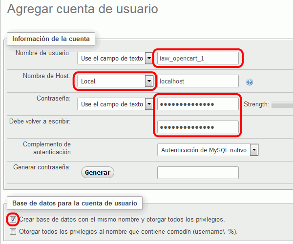
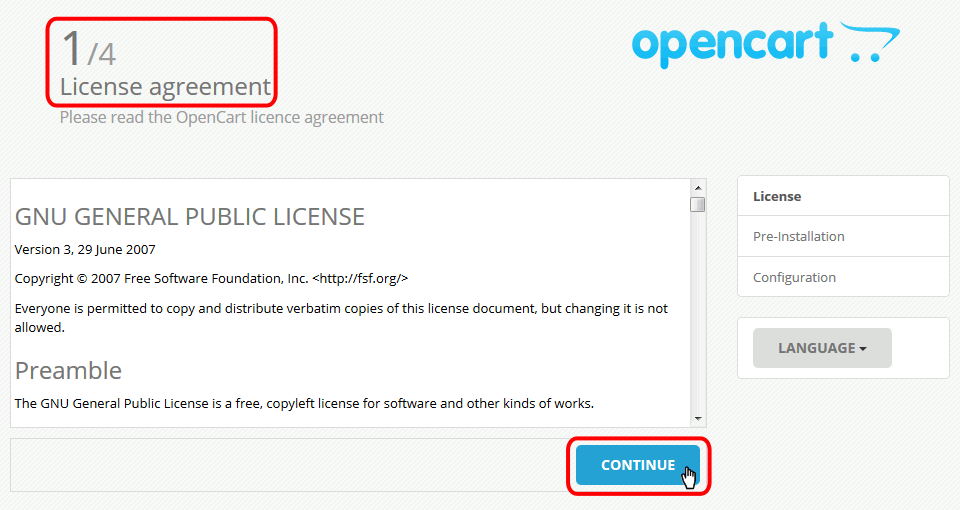
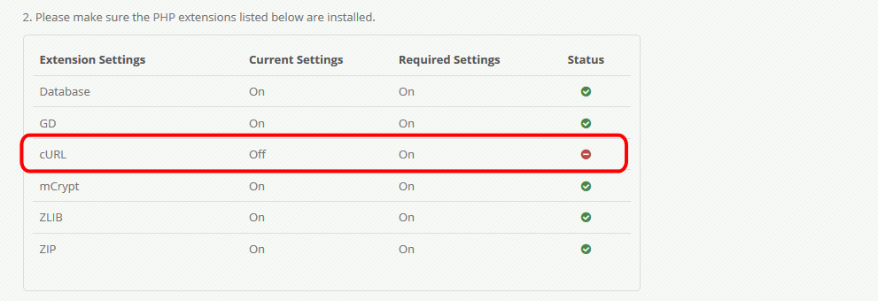
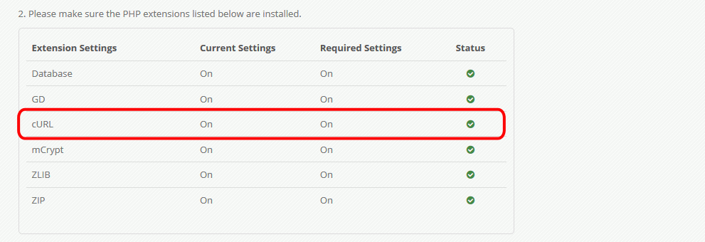
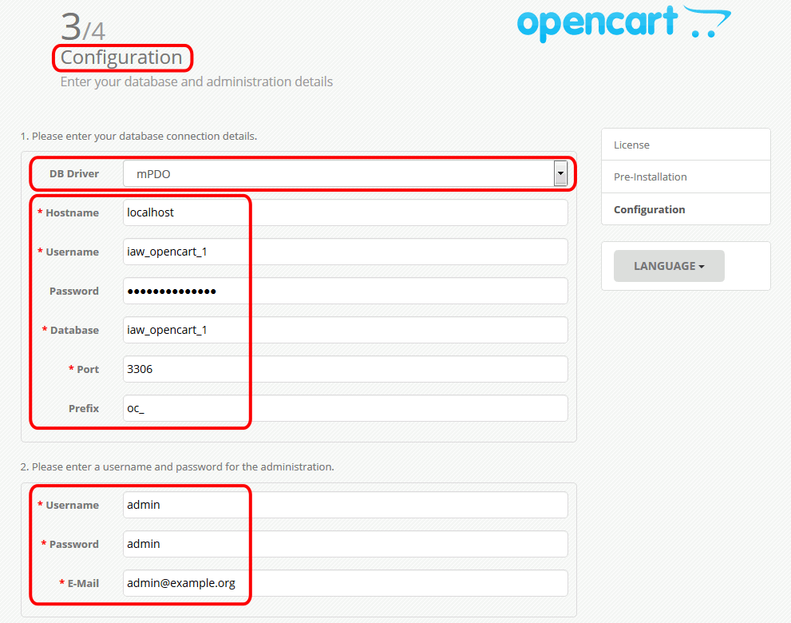
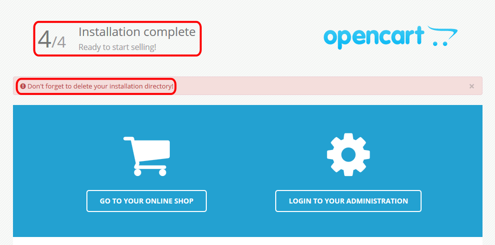

OpenCart (1) 2 - Instalar
Referencias:
- Web de documentación de OpenCart: http://docs.opencart.com/
- Archivo install.txt que se encuentra en el archivo comprimido de OpenCart.
En este ejercicio se pide hacer dos instalaciones de OpenCart (una para consulta y otra para modificación). Se explica aquí la instalación para modificación. La instalación para consulta se realiza mediante el mismo procedimiento, salvo el directorio de instalación (que será opencart_0 en vez de opencart) y el usuario, contraseña y base de datos en MySQL (que será iaw_opencart_0 en vez de iaw_opencart_1).
- Una vez descargado OpenCart, descomprima el archivo descargado en una carpeta y copie el contenido de la carpeta upload en una carpeta accesible desde el servidor local. La carpeta descomprimida sin la carpeta upload se podrá borrar posteriormente una vez consultados los ficheros de ayuda a la instalación.
En estas soluciones, de acuerdo con las recomendaciones de configuración general de estos apuntes, se supondrá que:
- OpenCart se encuentra en la carpeta: Mis documentos > IAW Nombre-de-alumno > Aplicaciones > opencart
- OpenCart se abrirá en la dirección http://localhost/nombre-de-alumno/webapps/opencart/index.php
- Cree con phpMyAdmin un usuario de MySQL con nombre iaw_opencart_1, contraseña iaw_opencart_1 y base de datos iaw_opencart_1.

- Siga las instrucciones de instalación incluidas en OpenCart.
- Renombre los archivos config-dist.php y admin/config-dist.php como config.php and admin/config.php, respectivamente.
- Abra opencart/index.php en el navegador. OpenCart detecta que existe el directorio /opencart/install y que es necesario utilizar el asistente de instalación, que se inicia automáticamente:
- A continuación se comentan las opciones a elegir distintas de las predeterminadas en los pasos del instalador:
- License agreement
OpenCart se distribuye bajo la licencia GLP 3. Si se acepta la licencia, hacer clic en el botón Continue para seguir la instalación.

- Pre-installation
OpenCart indica si el sistema permite la instalación de OpenCart.

Si falta alguna extensión de PHP, será necesario activarla. Por ejemplo, si no estuviera activada la extensión cURL:

Las extensiones se activan en el archivo php.ini del servidor (no el archivo php.ini que hay en la carpeta de OpenCart):
/* php.ini */ ... extension=php_curl.dll ... extension=php_gd2.dll ... extension=php_mysql.dll ...Una vez reiniciado Apache, al actualizar la página se podrá ver si todo está correcto:

- Configuration
DB Driver: mPDO
Database host: localhost
User: iaw_opencart_1
Password: iaw_opencart_1
Database name: iaw_opencart_1
Username: admin
Password: admin
E-Mail: admin@example.com

- License agreement
- Si todo ha ido bien, se mostrará la página final del asistente de instalación:

- Al terminar la instalación, se puede cerrar la ventana del navegador, pero antes de abrir nuevamente OpenCart, es necesario borrar el directorio opencart/install.